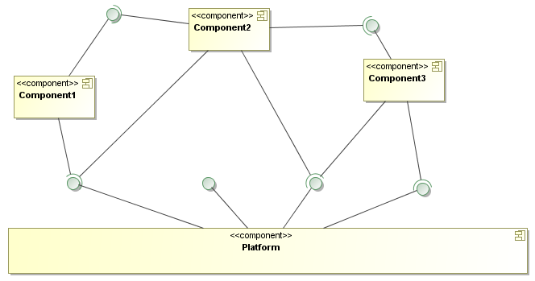

Креирано 2026-01-13 Tue 16:21, притисни ESC за мапу, Ctrl+Shift+F за претрагу, "?" за помоћ
In a world of rapidly changing business requirements, custom-made software is often too late – too late to be productive before becoming obsolete.
Често се тврди да је софтвер превише флексибилан да би било могуће креирати компоненте – ово не може бити разлог већ више знак незрелости области.
A key issue is that today's software environments focus on writing new software, instead of integrating existing software into new systems. In reality, integrating existing code has become a large part of the work of software developers. Therefore, there is a need for tools that standardize the integration aspects of software so that reusing existing components becomes reliable, robust and cheap.
